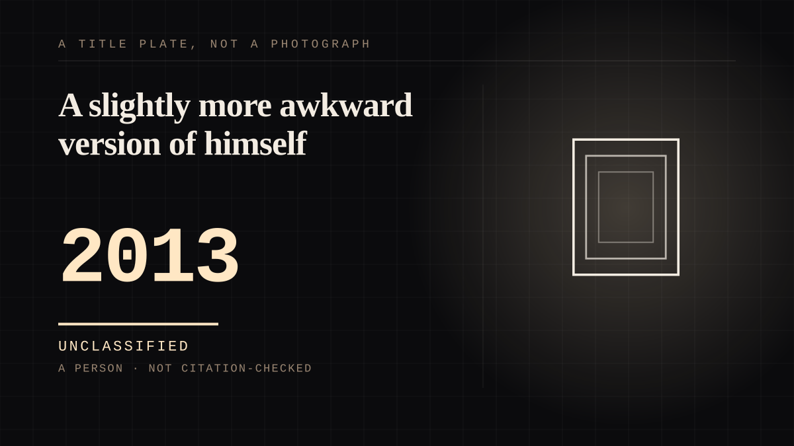

A person · 2013 ·
A slightly more awkward version of himself
A comedian who stages real situations for people who have not read the script, and performs a slightly more awkward version of himself inside them - the manufacturing is the show, and the audience has been told so from the beginning.

The figure the audience attaches to is a written character performed by its author, and the show says so in its own premise. Nathan for You (2013-2017) is the show in which he "portrays a slightly more awkward version of himself, who offers advice to struggling businesses", built on him "playing a persona loosely based on himself" for local small businesses. The usual idol is assembled by other people and the manufacturing is the concealment; the shelf's test - did they make the thing - is answered here by the man himself, who co-created the show, wrote it, directed it and starred in it. There is a version of him that exists whether or not anyone is watching: the finished seasons. The difference is what the audience is told. The mask is not a secret kept from the audience; it is the format, stated in the premise, and the show's material is what happens when people who have not read the script meet a figure who has. And it kept stepping outside the studio into things the public could investigate. On the morning of February 7, 2014, a coffee shop called Dumb Starbucks Coffee opened in the Los Feliz neighborhood of Los Angeles, parodying the chain's signage and cups with "Dumb" in every product name and distributing beverages and pastries free of charge. For three days the public theorised Banksy or Tim & Eric - the latter's production company "had applied for a filming permit" at the location. The shop was closed on February 10, 2014 by the Los Angeles County Department of Public Health for not having the permits required to operate a coffee shop; shortly afterwards Fielder announced he was behind it, and the explanation the character gives inside the episode for his parody-law defence is "based off what I read on Wikipedia". The reveal was not a correction of the audience's relationship to the joke. It was the episode. The Rehearsal is the machinery described plainly, and part of the audience recognised the description as its own condition. The show rehearses social encounters with actors in replica sets before living them; its first season (2022) drew critical acclaim and the Independent Spirit Award for Best New Non-Scripted or Documentary Series, and among the responses the article records is a reading no other entry here has: the show's central idea "resonated with many autistic viewers, who viewed it as an analogy for autistic masking". An audience that experiences social performance as choreography watched a man build the choreography as apparatus, and did not need the metaphor explained to it. Season two (2025) turned the method on aviation safety; the FAA denied the show's central claim about pilot communication, and Fielder answered on CNN: "That's dumb. They're dumb." He then became an FAA-certified Boeing 737 commercial pilot in February 2025 and works as a ferry pilot for Nomadic Aviation Group, a company that transports empty planes around the world. And the public figure is maintained on purpose, which is the shelf's distance turned inside out. The idol shelf describes a finished body of work and a public image that the person is not required to maintain for you. Fielder maintains his constantly, in public, as the material - Emma Stone, adding him to Time's list of the most influential people in 2023, described him moving "fluidly between directing, writing, acting, and producing, all while editing The Rehearsal" and called it a "staggering feat". The influences he has named, Chris Morris and Stephen Colbert, come from the same tradition: a public figure performed as the material rather than lived beneath it. Even the non-comedy work runs the same way. Summit Ice Apparel, founded in 2015 after he learned that an organisation he had previously supported published "a tribute to the Holocaust denier Doug Collins", took "close to $500,000 in sales in the first three months", with the profits going to the Vancouver Holocaust Education Centre - and the Nathan for You episode that launched it was later removed by Paramount+ over a German division's concerns, so even the merchandise carries an edited record. Fielder has called Summit Ice his "proudest achievement". It fits: the most durable thing the figure ever produced was real money going to the right place.
Where it sits
2010 2010+ · 2013 2026
Provenance · 1 source record(s)
- retrievableBorn 12 May 1983 in Vancouver; Bachelor of Commerce, University of Victoria, 2005; Humber College comedy programme 2006 after briefly working for a brokerage firm; correspondent on This Hour Has 22 Minutes with 'Nathan on Your Side', 2008-2009; co-created, wrote, directed and starred in Nathan for You (2013-2017), in which he 'portrays a slightly more awkward version of himself, who offers advice to struggling businesses', the premise featuring him 'playing a persona loosely based on himself, providing advice for local small businesses'; Dumb Starbucks Coffee opened the morning of February 7, 2014 in Los Feliz, with identities theorised as Banksy or Tim & Eric (Abso Lutely Productions 'had applied for a filming permit' at the location), closed February 10, 2014 by the Los Angeles County Department of Public Health, and the in-episode account of parody law, 'based off what I read on Wikipedia'; The Rehearsal (2022-) and the Independent Spirit Award for Best New Non-Scripted or Documentary Series; the show's central idea 'resonated with many autistic viewers, who viewed it as an analogy for autistic masking'; Season 2's aviation-safety focus, the FAA's denial of the show's central claim, and 'That's dumb. They're dumb.'; FAA-certified Boeing 737 commercial pilot, February 2025, and ferry pilot for Nomadic Aviation Group, 'a company that transports empty planes around the world'; Time 100 in 2023, added by Emma Stone, describing him moving 'fluidly between directing, writing, acting, and producing, all while editing The Rehearsal' as a 'staggering feat'; Summit Ice Apparel founded 2015, 'close to $500,000 in sales in the first three months', profits to the Vancouver Holocaust Education Centre, its origin in Taiga's 'tribute to the Holocaust denier Doug Collins', the 2017 Vancouver pop-up trade-in, the Paramount+ removal of the episode, and Fielder calling it his 'proudest achievement'; influences named as Chris Morris and Stephen Colbert.Wikipedia. 'Nathan Fielder.' ↗
Connected · 2 out, 0 in
It sits in